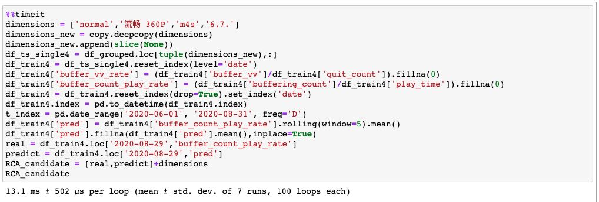
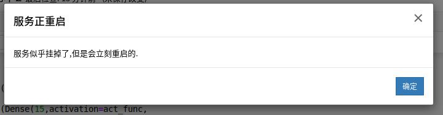
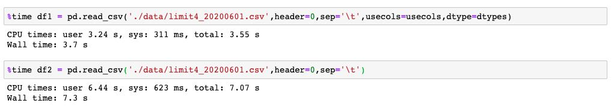

待处理的数据为92个csv文件，单个400M左右，共40G左右，数据量级为3亿级。
如果按常规套路操作，Pandas批量读取csv为DataFrame再concat合并，等在前方的就是浪费几小时生命后得到服务区挂掉的告警，这是无法接受的。
我会把整个踩坑爬坑的过程分享出来，不想看过程的同学可以到第三部分绕坑之法直接看总结的一些方法技巧。
掉坑之始
这一切要从在数据平台写了个调度项目说起。
为了卡顿根因分析，在数据平台专门建了个获取相关维度数据表的调度项目，最开始是关于视频卡顿的12个维度+几个KPI指标。当时写完之后已经快到点了，执行了某一天的调度任务就开心地回家了。
次日上班，先是看了调度任务监控。嗯成功了，不错。再一看用时，11个多小时，什么？！眼前一黑，水温瞬间升高，青蛙感到了不对。不死心地去TiDB数据库select count(*)一看，一天果然有千万级数据，三个月92天就是数十亿级别的数据量。十亿行十多列数据的csv文件大概有100G左右的大小，不说Python单机能不能处理这个数据量，256G磁盘空间的MAC mini第一个就要罢工。行了，不说了，重新建表来过吧。
这次在写HQL的时候，直接限定了4个不希望出现的最后根因集合里的维度（Surprise和Explanation Power不足）。降维到8个维度跑出来的结果是每日300万条数据左右，单个调度任务耗时1小时左右。当时感觉是可以接受的数据量（事后证明还是太年轻），就跑了6月到8月三个月的数据准备大干一场了。
因为从远程主机的数据库直接导出三个月数据的话文件过大，用堡垒机是无法下载这么大文件到本地的，所以按日期导出了csv文件再下载到本地，共92个。由于以前处理的数据量级都在亿级以下，即使千万级的数据量Pandas的处理速度都不错，于是我想当然地用以前的老套路，读取到文件夹里所有csv文件名后，用一个循环读取每个csv和用concat方法合并为一个整体DataFrame。
跑了几小时后，我无语凝噎。

爬坑之路
首次读取失败之后，我想的是会不会Pandas.concat()方法速度过慢，尤其是参数里还有ignore_index=True，导致每次循环时候都需要重新排列索引。那能不能换一种更简单，速度更快的方法呢？这时自然地想到了DataFrame.append()方法。
1 | %%time |
又是难熬的几小时，.append()也宣布失败。其实在运行超过一小时后，我就已经在心里宣判这个方法的无效，转而寻找新的思路了，因为很难接受超过一小时的文件读取。这次我尝试了拆解步骤，先循环读取文件为DataFrame，再循环合并为整体DataFrame。在文件处理循环运行超过一小时后我放弃了这个方法。
1 | %%time |
失败三次后，我开始想，能不能不用Pandas转而用别的工具库来处理数据。Vaex进入了我视线，用数秒读取亿级数据的性能吸引了我。这种高性能是建立在hdf5数据文件基础上的，所以我需要先将csv转换为hdf5。然而Pandas直接转为的h5文件是不符合要求的，需要用Vaex.from_pandas()的方法转为hdf5，这在此时的情况下不是一个死循环么。
我试着用DataFrame.to_hdf()方法导出h5，再分别读取csv和h5比较了耗时，确实也有一定提升，但是10%左右的性能提升没法真正解决问题。以后有合适的hdf5文件的时候倒是可以体验下Vaex的强大之处。

可惜地放弃掉Vaex之后，我回到了Pandas这条路。这次我想的是不给Pandas用到循环的机会，提前合并多个csv文件为一个大文件，直接读取一个大文件。而这个思路让我找到了救命稻草——CSVKIT。通过终端命令行安装好csvkit后输入类似如下命令：
1 | $ csvstack single_*.csv > all.csv |
就可以提前简单方便地将多个csv文件合并到一个大文件中。92个csv文件用了半小时就完成了合并。
这时，我还想提升Pandas读取文件的效率，同时也避免内存和磁盘空间不足的问题。这再细分为了几个思路，从数据特性上面考虑，从文件类型考虑，从Pandas特性上考虑，和从NumPy方面考虑。
- 数据特性上，可以考虑只留下这次分析所需要的维度和KPI指标，同时给定他们的最小空间占用的数据类型，大幅度减少DataFrame文件的内存和磁盘空间占用。
- 文件类型上，以后可以考虑使用读取和处理速度更高的HDF5格式。
- Pandas特性上，如果能用
.apply()方法、矢量化操作，往往能节省很可观的时间。 - NumPy方面，由于Pandas的DataFrame本身就是基于NumPy库的，所以一些NumPy库的高性能操作也能作用于DataFrame上。
基于这次数据本身特点，我选择删去了不需要的列，以及限定了所选列的数据类型，确实在时间上有大幅度的提升。最后接近3亿条的数据只用了12分钟就读取完毕。

那两天我也有看到别人处理大文件时会用到分块处理的方法，分块读取再concat为一个整体。我有些疑惑的是，一个大文件的分块读取再合并和多个较小文件的读取再合并除了迭代器有哪些区别呢，迭代器的效率能提升多少呢？这就等下次时间更充裕的时候去尝试比较吧。
绕坑之法
- 大量数据（亿级以上）的时候，要非常谨慎地使用效率不高的方法，非常关键。
- 多个大csv文件，可以用csvkit提前做简单处理。
- 读取时限定数据类型和列名，大幅减少不必要的空间占用。
- 文件格式可以转换为更高性能的HDF5格式再进行后续处理。
- 使用Pandas的高效方法如.apply()方法、矢量化操作。
- 使用NumPy的一些高效方法。
- 最根本的是深入了解数据，了解自己要做什么，才能找到对应的适合自己的方法。
写在最后
无论是调度任务，读取文件，还是处理数据，漫长无尽的等待总是让人沮丧。希望我们都能减少无谓的等待时间，完成更高效更有价值产出的工作。
参考文章：
Fast, Flexible, Easy and Intuitive: How to Speed Up Your Pandas Projects